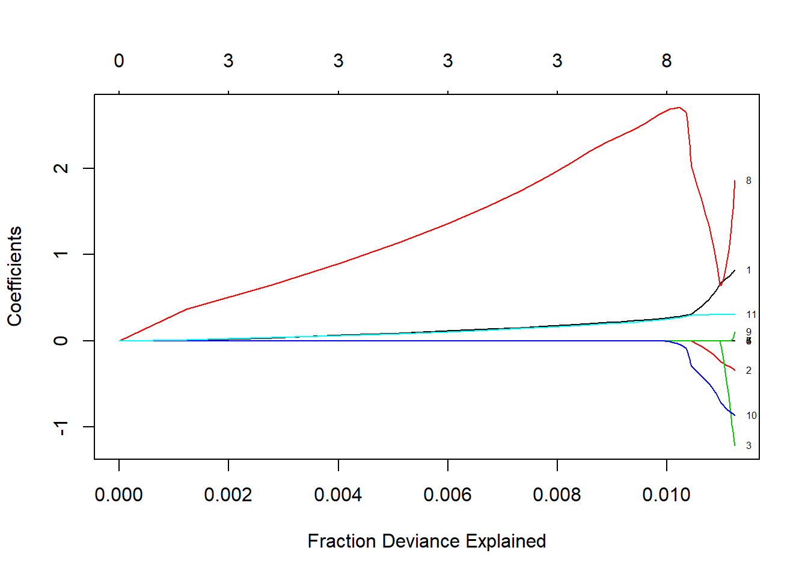
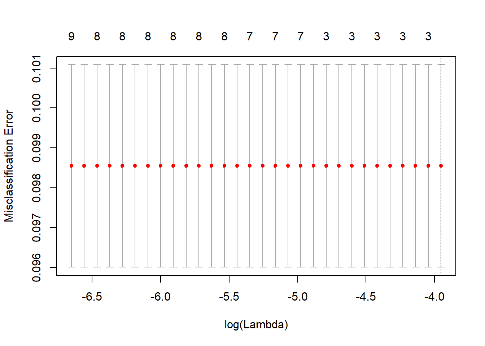

Chapter 4 Regression
load("./save/BreastCancer.Rdata")
#import
Data_Purchase_Prediction <-read.csv("C:/Users/007/Desktop/Data science with R/R/Dataset/Chapter 6/PurchasePredictionDataset.csv",header=TRUE)
library(IDPmisc)
library(Metrics)
library(MASS)
library("lattice")
library(car)4.1 introduction
First supervized learning. Supervised learning means we have the (X,Y) and we need to get the function that maps X to Y. Dependante variable is available and regression use others predictives variables to estimate regression coefficient.
4.2 Linear regression
- Model : \(Y=\alpha + X \beta + \epsilon\)
- Linéaire: on suppose distribition normal
- \(\alpha\) :intercepte : la reponse moyenne si les variables explicatives sont zéro
- Remarque
- Categorical data : set to as factor
- Check Missing value : delete, impute, new catégorie
- Hypothèses :
- \(rang(X) = p\) => Rang est connu, exclus la multicolinéarité
- X est une matrice déterminée
- \(\epsilon\) sont des erreurs indépendantes
- \(E(\epsilon) = 0\) => erreur de moyenne nulle (normalité des résidus)
- \(var(\epsilon) = \sigma_2 In\) => variance Homoskédastique non autocorrélé
- Estimation et propriétés des estimateurs : Estimation par moindres carrés ordinaires : Minimise les squares error. Estimateur le plus efficace dans la classe des estimateurs non biaisé :BLUE
- \(E[Y] = X \beta\)
- \(Var(Y) = \sigma In\)
- \(E[\hat(\beta)] = \beta\)
- \(var(\hat(\beta)) = \sigma (X'X)^(-1)\)
- Si \(\epsilon ~ N(0, \sigma In)\), alors \(\hat(\beta) ~ N(\beta, \sigma^2 (X'X)^(-1))\)
\[SSTO = SSR + SSE\] \[\sum{(Y_i - \bar{Y})^2} = \sum{(\hat{Y}_i - \bar{Y})^2} + \sum{(Y_i - \hat{Y})^2}\]
- Diagnostiques :
- F-test :
- \(H_0 : \beta_i = 0 \forall i\)
- stat de test : \(\frac{(SSTO - SSE)/(p-1)}{SSE/(n-p)} = \frac{MSR}{MSE} \sim F(p-1,n-1)\)
- coefficient de détermination multiple \(R^2\) : mesure de qualité d’ajustement
- \(\frac{SSR/SSTO}\)
- Multicolinéarité : forte corrélation entre variables explicatives
- Conséquence : Interprétation des coéfficients impossibles
- Diagnostiques :
- variance des coefficients très larges,
- coefficients varient beaucoup a l’ajouts/retrait de variables,
- coefficients ont signes non intruitifs
- Calcule des VIF (variance inflation factor) : si mpoyenne des VIF > 1 ou un VIF >10)
- \(tolérance = 1-R²\) et \(VIF = \frac{1}{tolérance}\)
- Solution : Supprimer des variables, regression de Ridge (permet l’inversion de la matrice X’X qui est impossible en cas de multicolinéarité parfaite)
- Linéarité : Graph des résidus Vs régresseurs
- Si forme connue : transformer les regressieurs (log, sqrt) ou ajouté un terme (quadratique, log, d’interaction, …)
- Homoskédasticité : graph résidus vs valeurs prédites, test de Breush et Pagan, BreushPAgan, Berlett test, arch test
- Variance des erreurs indépendante des variable explicative
- Estimation reste correcte sous homoskédasticité : utilisé une variance corrigé : Régression de white
- Erreur Non indépendante : test d’autocorrélation Dubin watson test, plot acf
- If résidual show definite relationship with prior résidual (like autocorrelation), the noise isn’t random and we still have some information that we can extract and put in the model
- Problème de modèle : passer en log lin, oubli de régresseur (qui est autocorrélé), inclure des lag de la variable dépendante
- Normalité des erreurs : QQplot, test de Jarque Berra, KS test
- estimation correcte mais interprétation des tests et des IC sont faussées car basé sur la normalité
- théorie des grand nombre, si assez observations, estimateur OLS est assymptiquement normal et les test et IC tendent assymptotiquement
- Influential Point Analysis: Les valeurs abérantes peuvent crée des biais dans les estimateurs. Si trop extreme, on peut les deletes, check, impute, …
- DFFITS
- DFBETAS
- Distance de Cooks :
- F-test :
\[ D_i = \frac{e²_i}{s²p} [\frac{h_i}{(1-h_i)²}]\] where \(s²= (n-p)^{-1}e^Te\) est la moyenne des erreurs quadratiques de la regression. Et \(h_i =x^T(x^Tx)^{-1}\). Avec cutoff \(D_i > 4/(n-k-1)\) ou k est le nombre de paramètre
Distance de Cook mesure l’effet of deleting a given observation. Si supprimer des observations cause grosse influence, alors ce point est suppiser etre outlier.
- Evaluation :
- RMSE = sqrt(mean($residuals)^2) ou $residuals = actual-predicted
- Interprétation :
- Pour une augmentation de une unité de speed, dist augmente de 3.9324.
- Intercepte donne la dist si speed vaut zero
reglin = lm(dist~ speed, data=cars)
summary(reglin)##
## Call:
## lm(formula = dist ~ speed, data = cars)
##
## Residuals:
## Min 1Q Median 3Q Max
## -29.069 -9.525 -2.272 9.215 43.201
##
## Coefficients:
## Estimate Std. Error t value Pr(>|t|)
## (Intercept) -17.5791 6.7584 -2.601 0.0123 *
## speed 3.9324 0.4155 9.464 1.49e-12 ***
## ---
## Signif. codes: 0 '***' 0.001 '**' 0.01 '*' 0.05 '.' 0.1 ' ' 1
##
## Residual standard error: 15.38 on 48 degrees of freedom
## Multiple R-squared: 0.6511, Adjusted R-squared: 0.6438
## F-statistic: 89.57 on 1 and 48 DF, p-value: 1.49e-12y = cars$dist
x = cars$speed
res <-stack(data.frame(Observed = y, Predicted=fitted(reglin)))
res <-cbind(res, x =rep(x, 2))
#Plot using lattice xyplot(function)
library("lattice")
xyplot(values ~x, data = res, group = ind, auto.key =TRUE)
sqrt(mean(residuals(reglin)^2))## [1] 15.06886rmse(cars$dist,predict(reglin))## [1] 15.06886# Normalité des résidus
sresid = studres(reglin)
sresid=NaRV.omit(sresid)
hist(sresid, freq=FALSE, main="Distribution of Studentized Residuals",breaks=25)
xfit<-seq(min(sresid),max(sresid),length=40)
yfit<-dnorm(xfit)
lines(xfit, yfit)
## ADD QQplot
## test normalité (attention juste indicateur)
ks.test(reglin$residuals,pnorm,alternative="two.sided")##
## One-sample Kolmogorov-Smirnov test
##
## data: reglin$residuals
## D = 0.49833, p-value = 3.283e-11
## alternative hypothesis: two-sidedshapiro.test(reglin$residuals)##
## Shapiro-Wilk normality test
##
## data: reglin$residuals
## W = 0.94509, p-value = 0.02152# Multicolinnéarité : VIF
# vif(reglin)
# residual autocorrelation : H0 = pas d'autocorrélation
durbinWatsonTest(reglin)## lag Autocorrelation D-W Statistic p-value
## 1 0.1604322 1.676225 0.206
## Alternative hypothesis: rho != 0plot(acf(reglin$residuals))
# Homoskédasticité : breush pagan test
# h0 : variance hétéscedastic
ncvTest(reglin)## Non-constant Variance Score Test
## Variance formula: ~ fitted.values
## Chisquare = 4.650233 Df = 1 p = 0.03104933#plot resi vs fit : detect non liearité, heterocedasticity, outlier
# if random = ok
plot(reglin$residuals,reglin$fitted.values)
# cook's distance
cutoff <-4/((nrow(cars)-length(reglin$coefficients)-1))
plot(reglin, which=4, cook.levels=cutoff)
# taille du cercle proportionnel a la distance de cook
influencePlot(reglin, id.method="identify",main="Influence Plot", sub="Circle size is proportional to Cook's Distance", id.location=NULL)
outlierTest(reglin)##
## No Studentized residuals with Bonferonni p < 0.05
## Largest |rstudent|:
## rstudent unadjusted p-value Bonferonni p
## 49 3.184993 0.0025707 0.12853# now investigate vs mean of data variable4.3 ANOVA
4.4 Polynomiale regression
Si la relation entre variables explicatives et variable dépendante n’est pas linéaire. Possibilité d’augmenter la relation dans des haut degré polynomials mais will cause overfitting. \[ y_i = \alpha_0 + \alpha_i x_i + \alpha_2 x²_i+ ... + \epsilon_i\]
- Exemple :
- Dependant variable = price of a commodity
- Explicative variable = quantiée vendue The general principle is if the price is too cheap, people will not buy the commodity thinking it’s not of good quality, but if the price is too high, people will not buy due to cost consideration. Let’s try to quantify this relationship using linear and quadratic regression
- Dependant variable = price of a commodity
y <-as.numeric(c("3.3","2.8","2.9","2.3","2.6","2.1","2.5","2.9","2.4","3.0","3.1","2.8","3.3","3.5","3"))
x<-as.numeric(c("50","55","49","68","73","71","80","84","79","92","91","90","110","103","99"));
linear_reg <-lm(y~x)
summary(linear_reg)##
## Call:
## lm(formula = y ~ x)
##
## Residuals:
## Min 1Q Median 3Q Max
## -0.66844 -0.25994 0.03346 0.20895 0.69004
##
## Coefficients:
## Estimate Std. Error t value Pr(>|t|)
## (Intercept) 2.232652 0.445995 5.006 0.00024 ***
## x 0.007546 0.005463 1.381 0.19046
## ---
## Signif. codes: 0 '***' 0.001 '**' 0.01 '*' 0.05 '.' 0.1 ' ' 1
##
## Residual standard error: 0.3836 on 13 degrees of freedom
## Multiple R-squared: 0.128, Adjusted R-squared: 0.06091
## F-statistic: 1.908 on 1 and 13 DF, p-value: 0.1905plot(y)
lines(linear_reg$fitted.values)
quad_reg <-lm(y~x +I(x^2) )
summary(quad_reg)##
## Call:
## lm(formula = y ~ x + I(x^2))
##
## Residuals:
## Min 1Q Median 3Q Max
## -0.43380 -0.13005 0.00493 0.20701 0.33776
##
## Coefficients:
## Estimate Std. Error t value Pr(>|t|)
## (Intercept) 6.8737010 1.1648621 5.901 7.24e-05 ***
## x -0.1189525 0.0309061 -3.849 0.00232 **
## I(x^2) 0.0008145 0.0001976 4.122 0.00142 **
## ---
## Signif. codes: 0 '***' 0.001 '**' 0.01 '*' 0.05 '.' 0.1 ' ' 1
##
## Residual standard error: 0.2569 on 12 degrees of freedom
## Multiple R-squared: 0.6391, Adjusted R-squared: 0.5789
## F-statistic: 10.62 on 2 and 12 DF, p-value: 0.002211plot(y)
lines(quad_reg$fitted.values)
# improvement in R square, quadratic term significant4.5 Logistique
4.5.1 General
Variable dépendante binaire : binomially distribued binomial distribution probability mass function : \(f(k;n,p) = P(X=k) = \left( \begin{array}{c} n \\ k \end{array} \right) p^k (1-p)^{n-k}\)
- Trois classe de modèle logistiques:
- binomial logistic regression : var dépendante soit 0 soit 1
- multinomial logistic regression : 3 ouplus niveu pour la variable dépendante (on utilise ditribution multinomiale)
- ordered logistic regression
Transformation logit : fonction de lien pour la regression : \(logit = \frac{e^t}{e^t+1}=\frac{1}{1+e^{-t}}\)
- LA cote : représente la relation entre presence/absence d’un event
- odd = P(A)/(1-P(A))
- un odd de 2 pour un event A mean l’event est deux fois plus probable qu’il se réalise que rien ne se réalise.
- Odd Ratio : rapport des cotes = Odd(A) / Odd(B)
- SI OR = 2 : Chanque que B se réalise sont deux fois suppérieur a celle de A
4.5.2 Binomial Logistic MODEL
Model : \[ logit(p_i) = \ln(\frac{p_i}{1-p_i}) = \beta_0 + \beta X \]
Hypothèses :
Estimation par MLE ou itérative avec optimisation du logLoss
- Diagnostiques :
- Si but est classification : check les predictions et classement
- Si but est analyse des coefficients : vérification des hypothèsese stat
Wald test : same a t-test in reg lin. Test sur les levels des variables sont individuellements significatifs. Suit une distri chi-square.
pseudo R-square : Mesure la proportion de variance expliqué par le modele. Mesure la différence entre la déviance un model null et fitted. Calcul par le likelihood ratio : \[R²_i = \frac{D_{null} - D_{fitted}}{D_{null}}\] ou D est la déviance : $ D = - 2ln $
Bivariate plot : observed and predictied vs variable explicative. Plot donne info sur comme le model sur comporte selon les différent niveau
Matrice de classification : - Spécificity = combien de negatif le model prédit correctement - sensitivity = combien de positif le model prédit correctement
library(ggplot2)## Warning: package 'ggplot2' was built under R version 3.3.3library(mlbench)## Warning: package 'mlbench' was built under R version 3.3.3 BreastCancer$Cl.thickness = as.numeric(as.character(BreastCancer$Cl.thickness))
BreastCancer$IsMalignant = ifelse( BreastCancer$Class== "benign", 0, 1)
ggplot(data =BreastCancer, aes(x = Cl.thickness, y = IsMalignant)) +
geom_jitter(height = 0.05, width = 0.3, alpha=0.4) +
geom_smooth(method = "glm", method.args = list(family = "binomial"))
reglog = glm(IsMalignant ~ Cl.thickness, family = "binomial",
data = BreastCancer)
summary(reglog)##
## Call:
## glm(formula = IsMalignant ~ Cl.thickness, family = "binomial",
## data = BreastCancer)
##
## Deviance Residuals:
## Min 1Q Median 3Q Max
## -2.1986 -0.4261 -0.1704 0.1730 2.9118
##
## Coefficients:
## Estimate Std. Error z value Pr(>|z|)
## (Intercept) -5.16017 0.37795 -13.65 <2e-16 ***
## Cl.thickness 0.93546 0.07377 12.68 <2e-16 ***
## ---
## Signif. codes: 0 '***' 0.001 '**' 0.01 '*' 0.05 '.' 0.1 ' ' 1
##
## (Dispersion parameter for binomial family taken to be 1)
##
## Null deviance: 900.53 on 698 degrees of freedom
## Residual deviance: 464.05 on 697 degrees of freedom
## AIC: 468.05
##
## Number of Fisher Scoring iterations: 6table(BreastCancer$Class, ifelse(predict(reglog, BreastCancer) < 0.5, 0, 1))##
## 0 1
## benign 453 5
## malignant 94 1474.5.3 Multinomial Logistic Regression
Variable dépendante a plus de une catégorie et suit une distribution multinomiale. On fait une regression logistic pour chaque classe et combine dans un seul equation sous contrainte que la somme des probabilités vallent 1. Estimation par iterative optimization of the LogLoss function.
- But : clairement de la classification. Deux méthode possible :
- Pick de highest probability : classe dans la classe qui a le plus haute probabilité par rapport au autres classe. Méthode soufre de la “Class imbalance probleme” (si les classes sont non equilibré, tendance à toujours assigner dans la plus grande classe)
- Ratio of probabilities : prendre la ratio des probabilité prédite et la prior distribution and choisir la classe basé sur le plus haut ratio. Cette méthode normalise les probabilité par le ratio du prior pour réduire le biais liéà la distribution du pior
Data_Purchase<-na.omit(Data_Purchase_Prediction)
rownames(Data_Purchase)<-NULL
#Random Sample for easy computation
Data_Purchase_Model<-Data_Purchase[sample(nrow(Data_Purchase),10000),]
# prior distribution
table(Data_Purchase_Model$ProductChoice)##
## 1 2 3 4
## 2130 3882 2955 1033# multinomial model
library(nnet)
mnl_model <-multinom (ProductChoice ~MembershipPoints +IncomeClass + CustomerPropensity +LastPurchaseDuration +CustomerAge +MartialStatus, data = Data_Purchase)## # weights: 44 (30 variable)
## initial value 672765.880864
## iter 10 value 615285.850873
## iter 20 value 607471.781374
## iter 30 value 607231.472034
## final value 604217.503433
## convergedmnl_model## Call:
## multinom(formula = ProductChoice ~ MembershipPoints + IncomeClass +
## CustomerPropensity + LastPurchaseDuration + CustomerAge +
## MartialStatus, data = Data_Purchase)
##
## Coefficients:
## (Intercept) MembershipPoints IncomeClass CustomerPropensityLow
## 2 0.77137077 -0.02940732 0.00127305 -0.3960318
## 3 0.01775506 0.03340207 0.03540194 -0.8573716
## 4 -1.15109893 -0.12366367 0.09016678 -0.6427954
## CustomerPropensityMedium CustomerPropensityUnknown
## 2 -0.2745419 -0.5715016
## 3 -0.4038433 -1.1824810
## 4 -0.4035627 -0.9769569
## CustomerPropensityVeryHigh LastPurchaseDuration CustomerAge
## 2 0.2553831 0.04117902 0.001638976
## 3 0.5645137 0.05539173 0.005042405
## 4 0.5897717 0.07047770 0.009664668
## MartialStatus
## 2 -0.033879645
## 3 -0.007461956
## 4 0.122011042
##
## Residual Deviance: 1208435
## AIC: 1208495# Modele converge en 30itérations.
#Predict the probabilities
predicted_test <-as.data.frame(predict(mnl_model, newdata = Data_Purchase, type="probs"))
## méthode 1 : the prediction based in highest probability
test_result <-apply(predicted_test,1,which.max)
result <-as.data.frame(cbind(Data_Purchase$ProductChoice,test_result))
colnames(result) <-c("Actual Class", "Predicted Class")
table(result$`Actual Class`,result$`Predicted Class`)##
## 1 2 3
## 1 302 91952 12365
## 2 248 150429 38028
## 3 170 90944 51390
## 4 27 32645 16798# bon résultat pour classe 123 mais pour classe 4 pas un seul case de classé.
## Methode 2 : normalisation avec la ditribution du prior
prior <-table(Data_Purchase_Model$ProductChoice)/nrow(Data_Purchase_Model)
prior_mat <-rep(prior,nrow(Data_Purchase_Model))
pred_ratio <-predicted_test/prior_mat
test_result <-apply(pred_ratio,1,which.max)
result <-as.data.frame(cbind(Data_Purchase$ProductChoice,test_result))
colnames(result) <-c("Actual Class", "Predicted Class")
table(result$`Actual Class`,result$`Predicted Class`)##
## 1 2 3 4
## 1 23698 61352 19540 29
## 2 31316 108133 49170 86
## 3 15512 75385 51535 72
## 4 5218 27250 16949 534.6 Generalized Linear Models
Pour GLM, on suppose que la variable dépendante est issue de la famille de ditribution exponentielle incluant la normal, binomial, poisson, gamma, … etc. \[ E(Y) = \mu = g^{-1}(X\beta) \] In R : glm(formula, family=familytype(link=linkfunction), data=) - binomial, (link = “logit”) : modele logistique - gaussian, (link= “identity”) : modèle linéaire - Gamma, (link= “inverse”) : analyse de survie (time to failure of a machine in the industry) - poisson, (link = “log”) : How many calls will the call center receive today?
4.7 Model Selection
- **Stepwise** : ajoute séquentielement la variables la plus significative. Après chaqeu ajout,le modèle réévalue la significativité des autres variables. Step : Model with 1 best feature, add next variables that maximise the evaluation function, ... Proc?dure tr?s lourde. parfois necessaire d'utiliser FIlter m?thod avant.### Data prep ###
#################
## Data with best feature from Filter method
data = get(load("C:/Users/007/Desktop/Data science with R/R/Dataset/LoanDefaultPred.RData"))
data[,"default"]=ifelse(data$loss ==0, 0,1)
data_model <-na.omit(data[,c("id","f338","f422","f724","f636","f775","f222","f93","f309","f303","f113","default"),])
### Forward ###
###############
full_model <-glm(default ~f338 +f422 +f724 +f636 +f775 +f222 +f93 +f309+f303
+f113,data=data_model,family=binomial(link="logit"))
null_model <-glm(default ~1 ,data=data_model,family=binomial(link="logit"))
forwards <-step(null_model,scope=list(lower=formula(null_model),upper=formula(full_model)), direction="forward")## Start: AIC=11175.3
## default ~ 1
##
## Df Deviance AIC
## + f422 1 11136 11140
## + f113 1 11150 11154
## + f222 1 11150 11154
## + f775 1 11165 11169
## + f93 1 11168 11172
## + f309 1 11171 11175
## + f303 1 11171 11175
## <none> 11173 11175
## + f636 1 11172 11176
## + f338 1 11173 11177
## + f724 1 11173 11177
##
## Step: AIC=11140.24
## default ~ f422
##
## Df Deviance AIC
## + f113 1 11113 11119
## + f222 1 11114 11120
## + f775 1 11129 11135
## + f93 1 11131 11137
## <none> 11136 11140
## + f303 1 11135 11141
## + f309 1 11135 11141
## + f636 1 11135 11141
## + f338 1 11136 11142
## + f724 1 11136 11142
##
## Step: AIC=11118.59
## default ~ f422 + f113
##
## Df Deviance AIC
## + f222 1 11096 11104
## + f775 1 11106 11114
## <none> 11113 11119
## + f93 1 11111 11119
## + f303 1 11112 11120
## + f636 1 11112 11120
## + f309 1 11112 11120
## + f338 1 11112 11120
## + f724 1 11113 11121
##
## Step: AIC=11103.78
## default ~ f422 + f113 + f222
##
## Df Deviance AIC
## + f775 1 11090 11100
## <none> 11096 11104
## + f303 1 11095 11105
## + f636 1 11095 11105
## + f309 1 11095 11105
## + f93 1 11095 11105
## + f338 1 11096 11106
## + f724 1 11096 11106
##
## Step: AIC=11099.57
## default ~ f422 + f113 + f222 + f775
##
## Df Deviance AIC
## + f303 1 11087 11099
## <none> 11090 11100
## + f309 1 11088 11100
## + f636 1 11089 11101
## + f93 1 11089 11101
## + f338 1 11090 11102
## + f724 1 11090 11102
##
## Step: AIC=11098.6
## default ~ f422 + f113 + f222 + f775 + f303
##
## Df Deviance AIC
## <none> 11087 11099
## + f636 1 11086 11100
## + f93 1 11086 11100
## + f309 1 11086 11100
## + f338 1 11086 11100
## + f724 1 11087 11101#best model with AIC criteria
formula(forwards)## default ~ f422 + f113 + f222 + f775 + f3034.8 Regularization Algorithms
4.8.1 Ridge regression
4.8.2 Least Absolute Shrinkage and Selection Opérator LASSO
4.8.3 Elastic Net
4.8.4 Leas-Angle Regression LARS
- **Lasso**dd penalty term against the complexity to reduce the degree of overfittingor the variance of the model by adding additional bas.
Check formul LASSO
Objective function for the penalized logistic regression: $ - [1/N y (_0 + x^T_t ) - (1 + ) ] + lambda[(1-)||||^2_2 ]$
library("glmnet")
### Data prep ###
#################
data = get(load("C:/Users/007/Desktop/Data science with R/R/Dataset/LoanDefaultPred.RData"))
data[,"default"]=ifelse(data$loss ==0, 0,1)
data_model <-na.omit(data)
y <-as.matrix(data_model$default)
# x <-as.matrix(subset(data_model, select=continuous[250:260]))
x <-as.matrix(data_model[,250:260])
fit =glmnet(x,y, family="binomial")
summary(fit)## Length Class Mode
## a0 52 -none- numeric
## beta 572 dgCMatrix S4
## df 52 -none- numeric
## dim 2 -none- numeric
## lambda 52 -none- numeric
## dev.ratio 52 -none- numeric
## nulldev 1 -none- numeric
## npasses 1 -none- numeric
## jerr 1 -none- numeric
## offset 1 -none- logical
## classnames 2 -none- character
## call 4 -none- call
## nobs 1 -none- numericplot (fit, xvar="dev", label=TRUE)
#Fit a cross validated binomial model
fit_logistic =cv.glmnet(x,y, family="binomial", type.measure="class")
plot (fit_logistic)
# on est sens? voir un tendance dans les points rouge. on veut le labda qui minimum le taux de mauvaise classifications
print(fit_logistic$lambda.min)## [1] 0.01919422param <-coef(fit_logistic, s="lambda.min")
param <-as.data.frame(as.matrix(param))
param$feature<-rownames(param)
#The list of variables suggested by the embedded method
param_embeded <-param[param[,2]>0,]
param_embeded## 1 feature
## f251 0 f251
## f252 0 f252
## f253 0 f253
## f254 0 f254
## f255 0 f255
## f256 0 f256
## f257 0 f257
## f258 0 f258
## f259 0 f259
## f260 0 f260
## f261 0 f261- ridge